White Palace:
The White Palace of Marghazar was built in 1940 by the first king of Swat, Miangul Abdul Wadud (Badshah Sahib) in the small town of Marghazar situated at about 13 kilometers away from Saidu Sharif. The name was given to the palace as it was built of white marble. The palace now serves as a hotel and is a very famous tourist resort.
I recently had the opportunity to visit the White Palace, and I was absolutely mesmerized by its beauty. I spent hours wandering the palace grounds, admiring the intricate carvings and architecture. I also took the time to enjoy the stunning views of the valley from the palace windows. One of my favorite things about the White Palace is the way it blends in with its natural surroundings. The white marble of the palace walls perfectly complements the green of the forests and the white of the snow-capped peaks. It is as if the palace was built to be a part of this landscape. If you are ever in the Swat Valley, I highly recommend visiting the White Palace. It is a truly unforgettable experience.
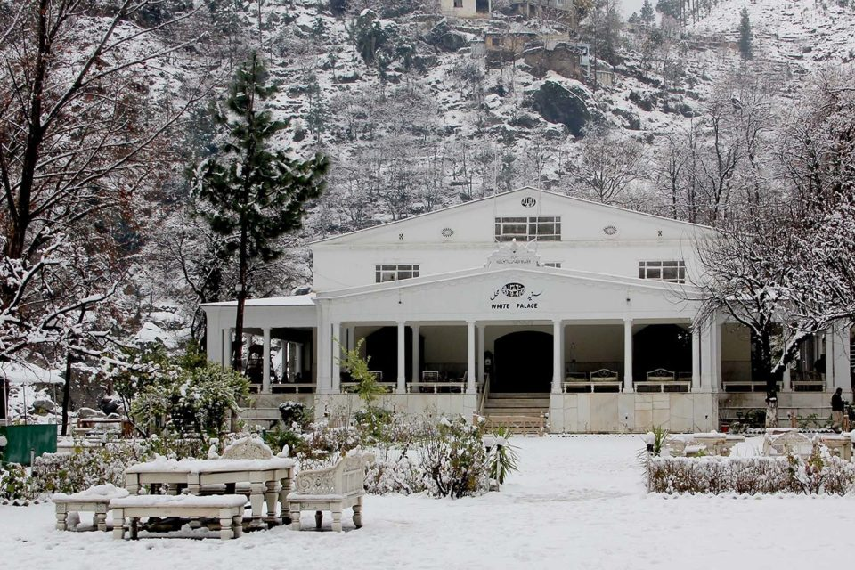 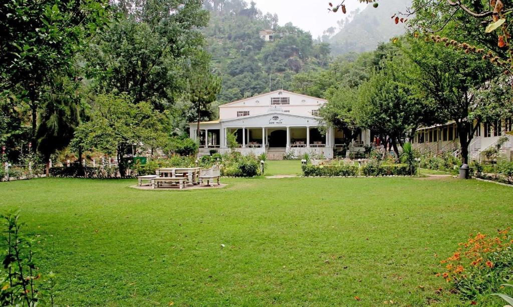 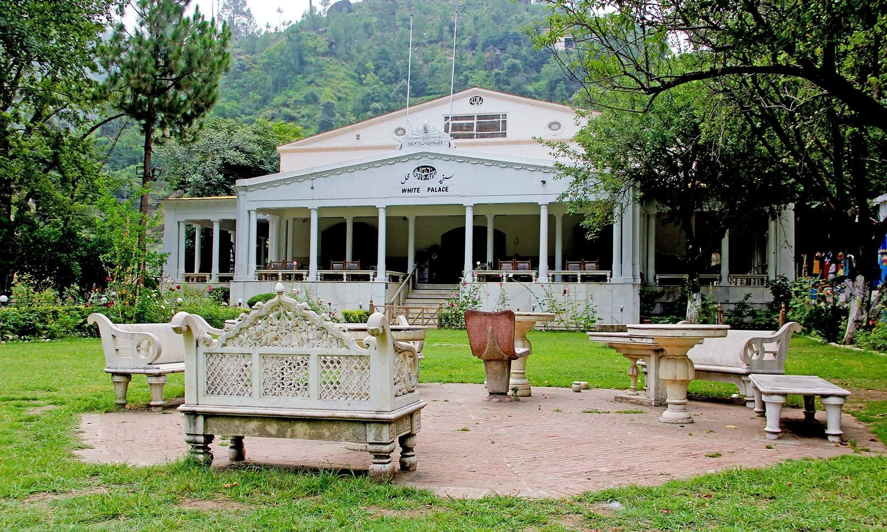 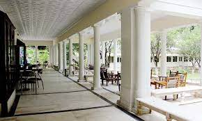Green Top:
Green Top is a small village in the Kalam Valley of Pakistan, known for its stunning beauty and natural charm. The village is nestled at the foot of towering mountains, surrounded by lush green forests and meadows. A small stream flows through the village, adding to its picturesque appeal.
Green Top is a popular tourist destination, and for good reason. The village offers a variety of activities for visitors to enjoy, such as hiking, trekking, camping, and fishing. Visitors can also explore the local bazaar, where they can find fresh produce, handicrafts, and other souvenirs.
you are looking for a place to escape the hustle and bustle of everyday life and immerse yourself in nature, Green Top is the perfect destination. With its stunning beauty, natural charm, and friendly people, Green Top is a place that will stay with you long after you leave.
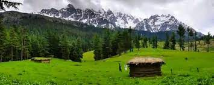 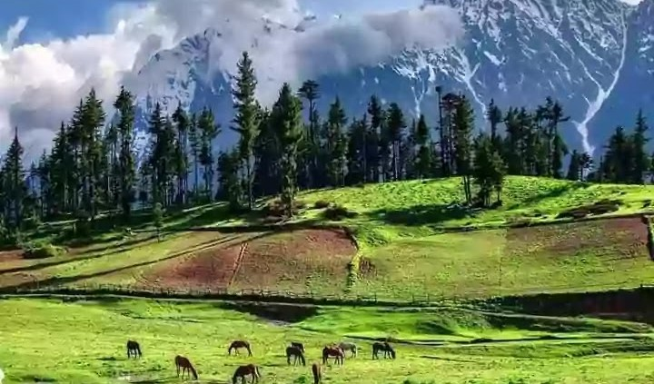 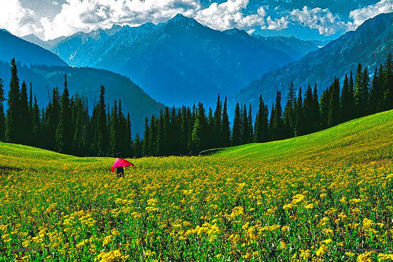 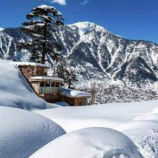Blue Water:
Blue Water is a beautiful lake located in Upper Kalam, Pakistan. It is known for its crystal-clear blue water and its stunning mountain setting. The lake is surrounded by lush green forests and towering peaks, making it a truly breathtaking sight to behold.
I recently had the opportunity to visit Blue Water, and I was absolutely blown away by its beauty. The water was so clear that I could see all the way to the bottom. It was also very cold.
Blue Water is a great place to relax and enjoy the natural beauty of Pakistan. It is also a popular spot for swimming, fishing, and boating. If you are ever in the Kalam Valley, I highly recommend visiting Blue Water. It is an experience you will never forget.
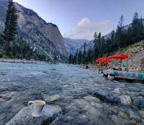 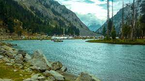 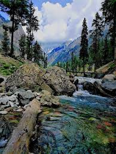 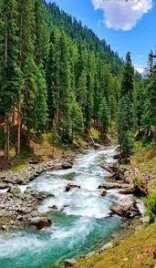